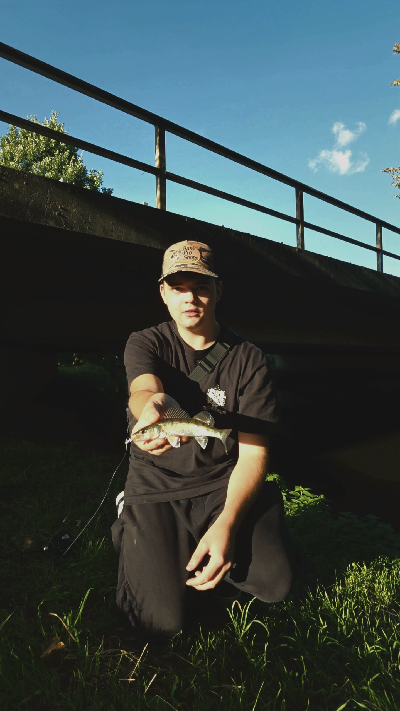

Hey, ich bin Antony 👋
Willkommen auf meiner Plattform! Unter @nays.addict dreht sich alles um Raubfischangeln mit Fokus auf Barsch, Zander und Hecht, High-End Setups und feinstes Terminal Tackle.
Ich habe diese Seite erstellt, um meine täglichen Erfahrungen am Wasser sowie meine persönliche Tackle-Auswahl transparent zu teilen. Egal ob Streetfishing im Kanal, UL-Angeln oder klassisches Jiggen. Qualität und die richtige Technik machen den Unterschied.
Barsch|Zander|Hecht
Nays®
Baitcast & Finesse
JDM / KDM Precision
Warum Nays & KDM / JDM Tackle?
Beim modernen Raubfischangeln kommt es auf kleinste Nuancen an. Die Kunstköder von Nays bieten nicht nur am Wasser maximale Performance, sondern setzen auch beim Design Maßstäbe. Kombiniert mit superscharfen koreanischen und japanischen Haken entsteht ein Setup, auf das man sich in jedem Drill zu 100% verlassen kann.